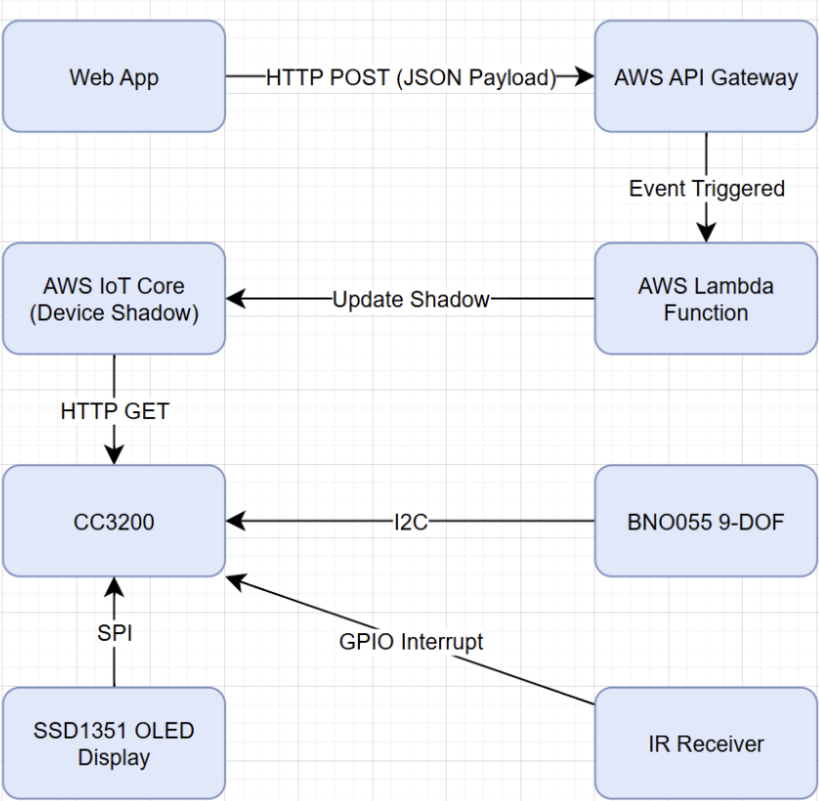
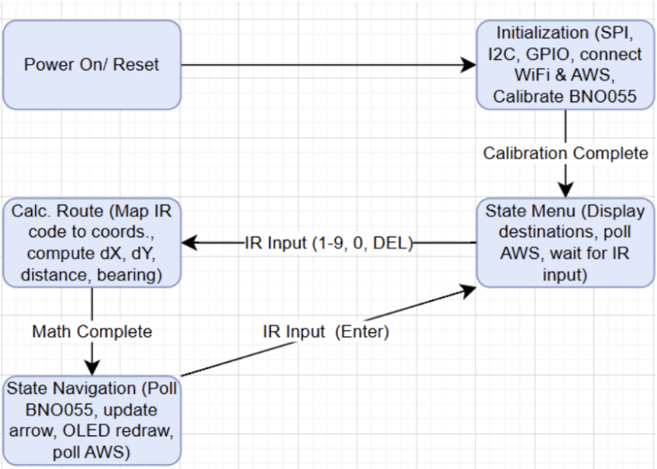

An IoT Wayfinding Device for UC Davis
The Smart Campus Navigator is an Internet-of-Things navigation device designed to guide users to locations across the UC Davis campus without using a GPS module directly on the device. Instead, GPS coordinates are obtained from a mobile device and transmitted through a cloud backend to an embedded system built around the Texas Instruments CC3200 microcontroller.
The system combines cloud computing, wireless networking, embedded programming, and sensor fusion to determine the user's orientation and display a compass-style navigation interface on an OLED display.
The system architecture consists of three layers: the mobile frontend, cloud backend, and embedded device.
A web application running on the user's smartphone retrieves the device's GPS coordinates and sends them to an AWS endpoint every five seconds.
AWS Lambda processes the coordinates and updates the AWS IoT Device Shadow, allowing the embedded device to retrieve the data.
The CC3200 microcontroller retrieves coordinates, reads heading data from the BNO055 sensor, and calculates the distance and bearing to the target. The direction is displayed on the OLED compass interface.

The prototype integrates multiple embedded peripherals connected to the CC3200 LaunchPad development board.
Main microcontroller handling Wi-Fi communication and system control.
Provides orientation data used to determine the user's heading.
SPI-driven display used to render compass graphics and distance data.
Allows the user to navigate the menu using a handheld IR remote.

The following video demonstrates the system initialization, menu navigation, and real-time directional guidance provided by the Smart Campus Navigator.
The system successfully computes the relative bearing between the user and destination and renders an intuitive compass interface.
Real-time coordinate updates are transmitted through AWS IoT, demonstrating a full edge-to-cloud IoT architecture.
Selective OLED redraw prevents flickering and enables smooth compass animation during navigation.
AWS infrastructure, BNO055 integration, cloud connectivity.
Frontend web app, navigation mathematics, IR signal decoding.